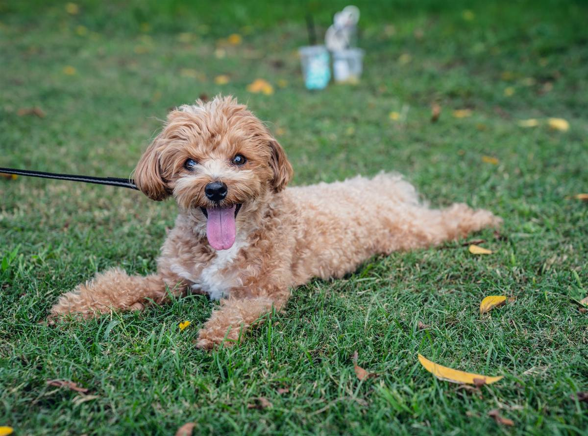
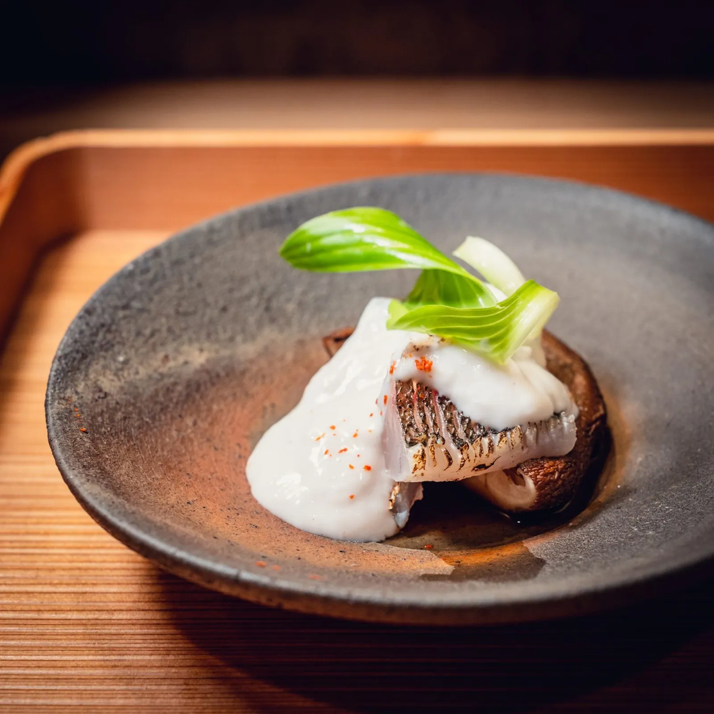
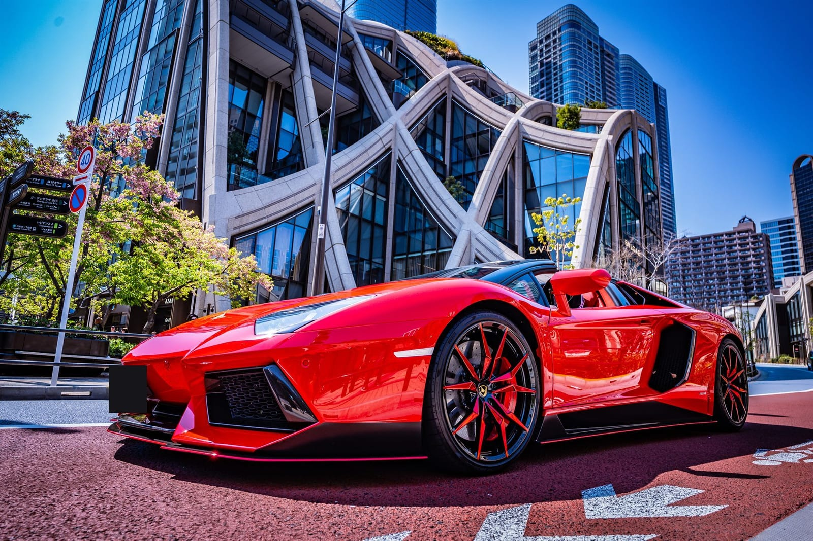

Pet01 / 安心を伝える
相談前の不安を、減らす。
うちのこ通い帳｜ペットサービス。日々の写真・料金・FAQで、はじめての相談に必要な情報を見せます。
美容・教室など、安心して頼んでもらいたい仕事にも。

Food02 / 品と予約導線
雰囲気を伝え、予約へ。
夜小路｜飲食店。料理写真と余白を主役に、献立・料金・予約前の情報へ案内します。
飲食・宿など、時間や空気感まで伝えたい仕事にも。

Car03 / 技術と実物の迫力
こだわりを、体験にする。
GRAPHIC EDITION｜車・バイク。大きな写真と操作に反応する演出で、技術の見せ方を確かめられます。
建設・職人・工房などにも。演出の強さは目的に合わせて調整できます。
同じ業種でなくても大丈夫です。美容・教室・宿・建設・工房なども、目的に合う見せ方を相談できます。
What to see
このサンプルで、
このサンプルで、
見てほしいこと。
デザインの好みではなく、「相談されるための工夫」を4点。業種が違っても、この“見せ方の型”はそのまま移せます。
01
写真の見せ方
実物の良さが伝わるトリミング・大きさ・並べ方。
02
料金の見せ方
不安にならない料金の出し方と、段階の見せ方。
03
不安の消し方
「頼んで大丈夫」と思える一言と、導線の置き方。
04
LINE相談までの導線
迷わず相談に届く、ボタンとひとことの設計。
※ サンプル利用に関するお願い
・3つのサンプル（ペット・飲食・車）は、すべて架空サンプルです。実在クライアント・実在店舗・実在の販売車両ではありません。
・掲載写真は見せ方サンプルであり、制作実績ではありません。
・無料相談・初回見立てシートに、実際の写真撮影は含まれません。写真が足りない場合は、追加撮影（+¥120,000〜）や、撮影込みのSTANDARD / PREMIUMでご案内できます。
・3つのサンプル（ペット・飲食・車）は、すべて架空サンプルです。実在クライアント・実在店舗・実在の販売車両ではありません。
・掲載写真は見せ方サンプルであり、制作実績ではありません。
・無料相談・初回見立てシートに、実際の写真撮影は含まれません。写真が足りない場合は、追加撮影（+¥120,000〜）や、撮影込みのSTANDARD / PREMIUMでご案内できます。
あなたの業種にも、
この見せ方を。
気になったサンプル名と、写真・URLまたは業種をひとこと。無料相談では、合う進め方と費用の目安までお返しします。具体的な改善案は、初回見立てシートからです。